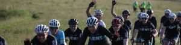

Welkom bij VCL
Ontdek de mooiste fietsroutes samen met enthousiaste fietsers
Over onze club
Vélo Club Lent (VCL) is een gezellige fietsclub uit Lent, bij Nijmegen, voor wielrenners die graag samen fietsen.
Tijdens het wielerseizoen rijden we op donderdagavond verschillende routes in de omgeving van Nijmegen. We fietsen in twee groepen:
- Piano, piano: gemiddeld 30–32 km/u.
- Gas op de lolly: gemiddeld 34–36 km/u.
Ook op zondagochtend trekken we regelmatig samen eropuit.
We laten niemand achter. Bij een lekke band of een onverwacht slechte dag wachten we op elkaar. Wel verwachten we dat je het tempo van je groep kunt volgen en na een bocht zelfstandig weer kunt aansluiten.
Waarom bij ons fietsen?
Gezelligheid
Geniet van gezellige tochten met gelijkgestemde fietsers
Veiligheid
We rijden in een groep met duidelijke afspraken en een wegkapitein.
Variatie
Ontdek verschillende routes en landschappen in de regio